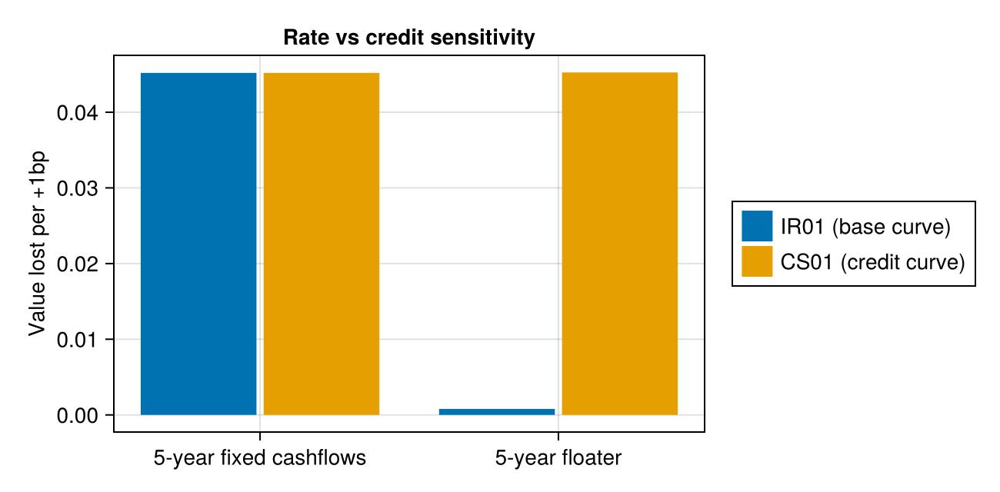

Interest-Rate Sensitivities
Calculate durations, DV01s, and convexities for scalar rates, FinanceCore Rates, FinanceModels AbstractYieldModel curves, and contracts. Scalar measures describe a parallel shift. Key-rate measures decompose risk by tenor with triangular continuous-zero bumps on the original curve. Callbacks use ForwardDiff through Yield.TenorShift; fixed cashflows use analytic derivatives. See the autodiff ALM chapter for background.
Explicit cashflow inputs that are empty or have all-zero amounts return zero value and risk without valuing any payment. Nonzero amounts that offset to zero present value retain their dollar exposures and undefined normalized risk. See Zero cashflow streams for numeric types and portfolio aggregation.
Shock coordinates
A one-basis-point shift must move some rate, and the dollar result depends on which one. Each single-rate input moves in its own shock coordinate:
| Input | What moves by s | Modified duration | Convexity weight |
|---|---|---|---|
Real y (annual effective) | y | Macaulay / (1 + y) | t(t+1) / (1+y)² |
Periodic(y, m) | the nominal rate y | Macaulay / (1 + y/m) | t(t+1/m) / (1+y/m)² |
Continuous(y) | y | Macaulay | t² |
Any AbstractYieldModel, including Yield.Constant | every continuous zero rate, in parallel | Macaulay | t² |
KeyRates(tenors) | continuous zero rates, through a triangular bump at each tenor | per tenor | per tenor pair |
Contracts with Effective()/Spread() | Effective(): continuous zero rates of the index and discount curves; Spread(): the discount curve only | — | — |
DV01 is -∂V/∂s / 10000 in the same coordinate: it is the first-order value lost for a rate increase of one basis point. Reversing a position reverses its dollar risk. Ordinary liability payments entered as negative cashflows contribute negative DV01, but the sign of a mixed position's present value alone does not determine its DV01. Parallel curve risk is ≈ the sum of the corresponding key-rate results, including convexity cross terms (see Convexity Conventions).
Wrapping a scalar in Yield.Constant keeps its discount factors but changes what moves, so duration and DV01 change by a factor of 1 + y:
using ActuaryUtilities, FinanceModels, FinanceCore
cfs = [5.0, 5.0, 5.0, 5.0, 105.0]
times = [1.0, 2.0, 3.0, 4.0, 5.0]
(scalar_dv01 = duration(DV01(), 0.03, cfs, times),
curve_dv01 = duration(DV01(), Yield.Constant(0.03), cfs, times),
ratio = duration(DV01(), Yield.Constant(0.03), cfs, times) / duration(DV01(), 0.03, cfs, times))(scalar_dv01 = 0.04841231123045375, curve_dv01 = 0.04986468056736737, ratio = 1.03)To measure a scalar yield in the curve coordinate, pass the equivalent continuous rate:
duration(DV01(), Continuous(log1p(0.03)), cfs, times) ≈ duration(DV01(), Yield.Constant(0.03), cfs, times)trueScalar Measures
Without a KeyRates marker, duration, DV01, and convexity return parallel risk. No tenor grid is involved:
rates = [0.03, 0.03, 0.03, 0.03, 0.03]
tenors = [1.0, 2.0, 3.0, 4.0, 5.0]
zrc = ZeroRateCurve(rates, tenors)
(duration = duration(zrc, cfs, times),
macaulay = duration(Macaulay(), zrc, cfs, times),
dv01 = duration(DV01(), zrc, cfs, times),
convexity = convexity(zrc, cfs, times))(duration = 4.567565211989925, macaulay = 4.567565211989925, dv01 = 0.0497588937140152, convexity = 21.985811257218064)For a flat curve, the scalar measures match an explicitly continuous rate at the same zero-rate level:
(zrc_dur = duration(zrc, cfs, times),
rate_dur = duration(Continuous(0.03), cfs, times),
zrc_conv = convexity(zrc, cfs, times),
rate_conv = convexity(Continuous(0.03), cfs, times))(zrc_dur = 4.567565211989925, rate_dur = 4.567565211989925, zrc_conv = 21.985811257218064, rate_conv = 21.985811257218064)Two curves: IR01 and CS01
For yield-model inputs, IR01 applies a parallel continuous-zero shift to the base curve, holding the credit curve fixed; CS01 shifts the credit curve, holding the base curve fixed. Both use the same sign and one-basis-point scaling as DV01.
For fixed cashflows discounted at base + credit, matching one-basis-point shifts to either curve produce the same change in the combined continuous zero rates. IR01, CS01 and combined-curve DV01 are therefore equal. The four convexity blocks are also equal when the value is nonzero. Here, credit is an additive discount spread.
More generally, the equality requires the same shock coordinate, shape and scaling. If value depends only on the sum of two additive shifts, $V(u, v) = F(u + v)$, both first derivatives equal $F'$ and all three second derivatives equal $F''$. Shifting both curves by one basis point shifts the combined curve by two basis points.
For fixed cashflows, use the combined curve's DV01, duration(DV01(), base + credit, cfs, times).
base = ZeroRateCurve([0.03, 0.03, 0.03, 0.03, 0.03], tenors)
credit = ZeroRateCurve([0.02, 0.02, 0.02, 0.02, 0.02], tenors)
duration(DV01(), base + credit, cfs, times)0.045196016712328625The measures can differ when a valuation uses the two curves differently. Pass the valuation first; it receives (base, credit). IR01 shifts the base curve in parallel and CS01 shifts the credit curve. Compare the fixed cashflows with a five-year floater paying the one-year forward rate plus a 2% margin. The floater's coupons reset on the base curve, while every payment is discounted at base + credit:
margin = 0.02
fixed_value(b, c) = pv(b + c, cfs, times)
floater_value(b, c) = sum(1:5) do t
coupon = 100 * (1 / discount(b, t - 1, t) - 1 + margin) # resets on the base curve
(coupon + (t == 5 ? 100 : 0)) * discount(b + c, t) # discounted at base + credit
end
(fixed = (ir01 = duration(fixed_value, IR01(), base, credit),
cs01 = duration(fixed_value, CS01(), base, credit)),
floater = (ir01 = duration(floater_value, IR01(), base, credit),
cs01 = duration(floater_value, CS01(), base, credit)))(fixed = (ir01 = 0.045196016712328625, cs01 = 0.045196016712328625), floater = (ir01 = 0.0007959223516993007, cs01 = 0.04525288779658654))The floater's IR01 is smaller because a base-rate move changes both projected coupons and discount factors, with much of the exposure offsetting. Its CS01 is close to that of a five-year bond because the credit curve changes only discounting in this example. For a FinanceModels contract, Floating-Rate Instruments: Effective vs Spread Duration makes the same distinction between rate and credit risk.
using CairoMakie
ir01s = [duration(v, IR01(), base, credit) for v in (fixed_value, floater_value)]
cs01s = [duration(v, CS01(), base, credit) for v in (fixed_value, floater_value)]
fig = Figure(size = (650, 320))
ax = Axis(fig[1, 1]; title = "Rate vs credit sensitivity", ylabel = "Value lost per +1bp",
xticks = (1:2, ["5-year fixed cashflows", "5-year floater"]))
colors = Makie.wong_colors()[1:2]
barplot!(ax, [1, 2, 1, 2], [ir01s; cs01s]; dodge = [1, 1, 2, 2], color = colors[[1, 1, 2, 2]])
Legend(fig[1, 2], [PolyElement(polycolor = c) for c in colors], ["IR01 (base curve)", "CS01 (credit curve)"])
fig
Two-curve convexity returns the parallel blocks keyed by role: base.base, credit.credit, and the cross block base.credit, equal to credit.base. They coincide for the fixed cashflows and can differ for the floater:
(fixed = convexity(fixed_value, base, credit),
floater = convexity(floater_value, base, credit))(fixed = (base = (base = 21.834088642963483, credit = 21.834088642963483), credit = (base = 21.834088642963483, credit = 21.834088642963483)), floater = (base = (base = 0.39584452087419875, credit = 8.873013076763346), credit = (base = 8.873013076763346, credit = 21.811595293328548)))The cross block is the mixed second derivative divided by the initial value; it contains no extra factor of two. See Two-curve convexity blocks for the second-order P&L formula.
Curve shocks and market-quote risk
These are sensitivities to the specified curve shifts, not a universal definition of market IR01 or CS01. For example, CDS CS01 in OpenGamma Strata measures sensitivity to CDS par spreads. Bumping a market quote and recalibrating a curve can produce a different curve change from a parallel zero-rate shift. Different shock coordinates or key-rate grids can therefore give different risk numbers even when the pricing function depends only on a combined discount curve.
A bond's contractual coupons can be fixed while its expected payments depend on default probabilities and recovery. Such a valuation need not depend on base + credit alone, so IR01 and CS01 can differ. The fixed-cashflow forms here hold the supplied amounts and times fixed; use a callback or contract when payments depend on the curves. For sensitivities to calibration inputs, use Market Inputs with the curve construction or calibration inside the valuation.
Key-Rate Decomposition
Pass KeyRates(tenors) to decompose risk by tenor. Choose the grid independently of the curve's own knots, for example the buckets your reporting requires. The grid must be nonempty, finite, positive, and strictly increasing. The KeyRates constructor validates these requirements, and calculations revalidate the grid in case it has been mutated.
The first and last bumps stay constant beyond the grid, so sensitivity after the last tenor belongs to its bucket. Extend the grid to separate exposures at longer maturities.
# Key-rate durations (modified): vector of -∂V/∂rᵢ / V
krds = duration(KeyRates(tenors), zrc, cfs, times)5-element Vector{Float64}:
0.04454051254277262
0.08644828291819
0.12584002506134292
0.16282785368321676
4.147908537784403# Key-rate DV01s: vector of -∂V/∂rᵢ / 10000
dv01s = duration(DV01(), KeyRates(tenors), zrc, cfs, times)5-element Vector{Float64}:
0.00048522276677425406
0.0009417645335842486
0.0013708967779068424
0.001773840873434315
0.04518716876231554# Key-rate convexity matrix: ∂²V/∂rᵢ∂rⱼ / V
conv_matrix = convexity(KeyRates(tenors), zrc, cfs, times)5×5 Matrix{Float64}:
0.0445405 0.0 0.0 0.0 0.0
0.0 0.172897 0.0 0.0 0.0
0.0 0.0 0.37752 0.0 0.0
0.0 0.0 0.0 0.651311 0.0
0.0 0.0 0.0 0.0 20.7395The parallel measures are ≈ the sums of the decomposition:
(duration(zrc, cfs, times) ≈ sum(krds),
duration(DV01(), zrc, cfs, times) ≈ sum(dv01s),
convexity(zrc, cfs, times) ≈ sum(conv_matrix))(true, true, true)Use sensitivities to calculate the value, durations and DV01s together, and with SecondOrder() the convexities and dollar convexities too, from one derivative calculation:
result = sensitivities(SecondOrder(), KeyRates(tenors), zrc, cfs, times)
# result.value — present value, a number
# result.duration — key-rate durations (modified, vector)
# result.dv01 — key-rate DV01s (vector)
# result.convexity — key-rate convexity matrix
# result.dollar_convexity — its unnormalized second derivatives, defined at zero value
result(value = 108.93964597023678, duration = [0.04454051254277262, 0.08644828291819, 0.12584002506134292, 0.16282785368321676, 4.147908537784403], dv01 = [0.00048522276677425406, 0.0009417645335842486, 0.0013708967779068424, 0.001773840873434315, 0.04518716876231554], convexity = [0.04454051254277262 0.0 … 0.0 0.0; 0.0 0.17289656583638 … 0.0 0.0; … ; 0.0 0.0 … 0.651311414732867 0.0; 0.0 0.0 … 0.0 20.739542688922015], dollar_convexity = [4.85222766774254 0.0 … 0.0 0.0; 0.0 18.835290671684973 … 0.0 0.0; … ; 0.0 0.0 … 70.9536349373726 0.0; 0.0 0.0 … 0.0 2259.358438115777])The default, FirstOrder(), leaves out the convexity and takes no second derivatives. Without KeyRates, every field is a number for one parallel shift:
sensitivities(zrc, cfs, times)(value = 108.93964597023678, duration = 4.567565211989925, dv01 = 0.0497588937140152)The two-curve callback forms also accept KeyRates; the callback receives the bumped (base, credit) curves. For the fixed cashflows, discount factors multiply, so continuous zero rates add, and the per-tenor IR01s and CS01s are equal:
(ir01s = duration(fixed_value, IR01(), KeyRates(tenors), base, credit),
cs01s = duration(fixed_value, CS01(), KeyRates(tenors), base, credit))(ir01s = [0.000475614712250357, 0.0009048374180359595, 0.0012910619646375866, 0.0016374615061559637, 0.04088704111124875], cs01s = [0.000475614712250357, 0.0009048374180359595, 0.0012910619646375866, 0.0016374615061559637, 0.04088704111124875])For the floater in Two curves: IR01 and CS01, base-rate changes also reset its coupons, so the base and credit key-rate durations differ in every bucket:
floater_krd = sensitivities(floater_value, KeyRates(tenors), base, credit)
(base_durations = floater_krd.duration.base,
credit_durations = floater_krd.duration.credit)(base_durations = [0.00018965202043654553, 0.00036080516451046104, 0.0005148127334909815, 0.0006529400269392132, 0.07815541204330301], credit_durations = [0.04816351255605358, 0.0916291006612555, 0.1307404450342861, 0.16581887771857495, 4.104935346694564])Base-rate changes affect coupons and discounting; credit changes affect discounting only. Each vector sums to ≈ the floater's parallel modified duration for its curve:
(base = sum(floater_krd.duration.base),
credit = sum(floater_krd.duration.credit))(base = 0.07987362198868021, credit = 4.541287282664734)Market Inputs
When the valuation builds its own curves from market data, differentiate with respect to named input vectors instead of curve bumps. Each input element is bumped in the units you pass in:
linear_curve(z) = ZeroRateCurve(z, tenors, Spline.Linear())
inputs = sensitivities((; zeros = [0.02, 0.025, 0.03, 0.035, 0.04], spread = [0.01])) do m
curve = linear_curve(m.zeros) + Yield.Constant(Continuous(only(m.spread)))
pv(curve, cfs, times)
end
(value = inputs.value,
zero_dv01s = inputs.dv01.zeros, # per input element
spread_dv01 = only(inputs.dv01.spread)) # the one spread element(value = 99.89923223041194, zero_dv01s = [0.00048522276677425406, 0.0009323938199059484, 0.0013303806550757362, 0.001670540422822544, 0.04088704111124875], spread_dv01 = 0.045305578775827235)The result is keyed by input name, with one entry per element, as for curves on a KeyRates grid.
With linear zero-rate interpolation and payments inside the knot range, the per-element results equal the KeyRates decomposition on the same knots.
Par-yield sensitivities: AD and bump-and-reprice
To measure sensitivity to par yields, rebuild the curve from par quotes inside the valuation. KeyRates(tenors) instead bumps continuous zero rates on an existing curve; these are different shock coordinates.
The following example uses annualized, semiannually compounded par yields in decimal units. It bootstraps a curve with linear interpolation of continuous zero rates, then values a seven-year bond with fixed annual payments:
using ActuaryUtilities, FinanceModels, FinanceCore
par_tenors = [1.0, 2.0, 3.0, 5.0, 10.0]
par_yields = [0.02, 0.024, 0.028, 0.032, 0.035]
payments = [4.0, 4.0, 4.0, 4.0, 4.0, 4.0, 104.0]
payment_times = collect(1.0:7.0)
function curve_from_par(yields)
quotes = ParYield.(yields, par_tenors; frequency = Periodic(2))
return fit(Spline.Linear(), quotes, Fit.Bootstrap())
end
par_value(yields) = pv(curve_from_par(yields), payments, payment_times)
ad = sensitivities((; par_yields)) do inputs
par_value(inputs.par_yields)
end
(tenors = par_tenors,
par_durations = ad.duration.par_yields,
par_dv01s = ad.dv01.par_yields)(tenors = [1.0, 2.0, 3.0, 5.0, 10.0], par_durations = [-0.002024728549301802, 0.004767512104164447, 0.011855425787893071, 3.7049121098384665, 2.5026921945608436], par_dv01s = [-2.1060444542347633e-5, 4.9589819983202156e-5, 0.0001233155611985314, 0.038537065153959375, 0.02603203781973167])Each entry differentiates one par quote while holding the other quotes fixed and recalibrating the curve. par_dv01s is $-\partial V/\partial q_i \times 10^{-4}$: the first-order value loss per one-basis-point increase. par_durations is $-\partial V/\partial q_i / V$; it divides by the value on the unbumped recalibrated curve. The sum of the buckets describes a parallel shift of these par quotes, not a parallel continuous-zero shift. The calculation requires a differentiable fit; FinanceModels' calibration checks still apply.
For a traditional finite bump, choose bump_bps and reprice both scenarios. This example moves only the five-year par quote by ten basis points in each direction:
bump_bps = 10.0 # positive bump size in basis points
h = bump_bps / 10_000
i = findfirst(==(5.0), par_tenors)
up, down = copy(par_yields), copy(par_yields)
up[i] += h
down[i] -= h
v0 = par_value(par_yields)
vup, vdown = par_value(up), par_value(down)
bump_result = (
up_change = vup - v0, # actual signed P&L for the +10 bp scenario
down_change = vdown - v0, # actual signed P&L for the -10 bp scenario
dv01 = (vdown - vup) / (2 * bump_bps),
duration = (vdown - vup) / (2 * h * v0),
)
(bump_result = bump_result,
ad_dv01 = ad.dv01.par_yields[i],
ad_duration = ad.duration.par_yields[i])(bump_result = (up_change = -0.38517622567030685, down_change = 0.385565113737357, dv01 = 0.03853706697038319, duration = 3.7049122844675035), ad_dv01 = 0.038537065153959375, ad_duration = 3.7049121098384665)The central-difference dv01 and duration estimate the derivatives and approach the AD results as the bump shrinks, until numerical precision limits the comparison. At a finite bump, the up and down P&Ls need not be opposites. To shock every par quote together, use up = par_yields .+ h and down = par_yields .- h; its AD comparison is sum(ad.dv01.par_yields) or sum(ad.duration.par_yields).
If starting from an existing curve, obtain synthetic quotes with [rate(par(curve, t; frequency = 2)) for t in par_tenors] and use those as par_yields. The rebuilt curve need not reproduce the original curve between quote maturities. This measures risk to that synthetic par calibration, not necessarily to the original market inputs. To measure original-input risk, use those inputs and their actual calibration procedure in the callback.
This is the migration route for KeyRatePar. Its old default was a ±10 bp bump, linear bootstrapping, and normalization by the original curve's price. The finite-bump example has the same par-bump interpretation; to retain that original normalization, replace v0 in the duration denominator with pv(curve, payments, payment_times). Results can differ from v5 where fitting or quote conventions changed.
Callable Valuations
Every callback form takes the valuation first, then any marker, then the rate, curves, or inputs. A valuation can be a function or a callable struct that holds its input data:
struct CashflowValuation{C, T}
amounts::C
times::T
end
(v::CashflowValuation)(curve) = pv(curve, v.amounts, v.times)
valuation = CashflowValuation(cfs, tenors)
duration(valuation, zrc)
convexity(valuation, zrc)
sensitivities(valuation, KeyRates(tenors), zrc)(value = 108.93964597023678, duration = [0.04454051254277262, 0.08644828291819, 0.12584002506134292, 0.16282785368321676, 4.147908537784403], dv01 = [0.00048522276677425406, 0.0009417645335842486, 0.0013708967779068422, 0.001773840873434315, 0.04518716876231554])Because the valuation comes first, do-block syntax works for every input, including scalar and Rate inputs:
duration(DV01(), Periodic(0.03, 2)) do rate
pv(rate, cfs, times)
end0.04907613823291006Using Cashflow Objects
Yield-model cashflow methods accept Vector{Cashflow} directly:
cfs_obj = Cashflow.([5.0, 5.0, 5.0, 5.0, 105.0], [1.0, 2.0, 3.0, 4.0, 5.0])
# These are equivalent:
a = duration(zrc, cfs_obj) # using Cashflow objects
b = duration(zrc, [5.0, 5.0, 5.0, 5.0, 105.0], [1.0, 2.0, 3.0, 4.0, 5.0]) # using amounts + times
(a, b, a ≈ b)(4.567565211989925, 4.567565211989925, true)This applies to duration, DV01, convexity, and sensitivities.
A Cashflow uses its own time even when you pass times; explicit times apply only to numeric amounts. A time vector needs one entry per cashflow; extra trailing entries are ignored:
fallback_times = fill(10.0, length(cfs_obj))
duration(KeyRates(tenors), zrc, cfs_obj, fallback_times) ≈
duration(KeyRates(tenors), zrc, cfs_obj)trueTo change payment dates, construct new Cashflow objects or pass numeric amounts with the desired times.
Other yield models
The same API works with parametric curves such as Nelson–Siegel:
ns = Yield.NelsonSiegel(1.0, 0.04, -0.02, 0.01)
ns_knots = [1.0, 2.0, 5.0, 10.0, 20.0]
ns_result = sensitivities(KeyRates(ns_knots), ns,
[5.0, 5.0, 5.0, 5.0, 105.0], [1.0, 2.0, 5.0, 10.0, 20.0])
ns_result.duration5-element Vector{Float64}:
0.0750010974032876
0.14431570258255752
0.3196447349521767
0.5232670389376577
14.731708008424652The Nelson–Siegel parameters stay fixed; only the layered zero-rate bumps move under AD.
Interest-Sensitive Instruments
For instruments whose cashflows depend on the rate environment, use the do-block syntax to pass a custom valuation function. The example below uses a deterministic call rule to illustrate the interface; it is not an option-pricing model for a callable bond. For pricing, supply a valuation that models the issuer's exercise decision under uncertain future rates.
# Callable bond: key-rate durations (vector)
callable_krds = duration(KeyRates(tenors), zrc) do curve
ncv = pv(curve, cfs, tenors)
called_value = pv(curve, cfs[1:3], tenors[1:3]) + 102.0 * curve(3.0)
min(ncv, called_value)
end5-element Vector{Float64}:
0.04519936105452047
0.08772703610921156
2.7328113626726207
0.0
0.0# Scalar duration (default)
callable_dur = duration(zrc) do curve
ncv = pv(curve, cfs, tenors)
called_value = pv(curve, cfs[1:3], tenors[1:3]) + 102.0 * curve(3.0)
min(ncv, called_value)
end2.8657377598363527The function receives a curve object and must return a scalar value. ForwardDiff differentiates the valuation as written, including branches such as min. At a kink it returns the derivative of one branch.
Floating-Rate Instruments: Effective vs Spread Duration
Pass a FinanceModels contract or portfolio directly. Contract measures differentiate present_value(Models(discount; index), contract). The bumped discount curve discounts cashflows and values closed forms. Every key the contract reads, such as a floater's "SOFR", returns the bumped index curve. A closed form present_value(ctx, c::MyContract) is used as written, also inside a Composite or a portfolio. The marker selects the risk:
- Effective (rate) duration: bump the curve; coupons re-fix. Small for a new floater (near zero at par), and about the time to the next reset once the current coupon is fixed (see
locked_floater). - Spread (credit) duration: bump the discount curve only; coupons stay fixed. Close to the duration of a fixed-rate bond with the same maturity.
using FinanceModels: Bond
floater = Bond.Floating(0.015, Periodic(1), 5.0, "SOFR") # SOFR + 150bp, 5y annual
(effective = duration(Effective(), zrc, floater), # rate duration, yrs — small
spread = duration(Spread(), zrc, floater), # spread duration, yrs — near a 5-year bond's
dv01 = duration(DV01(), Effective(), zrc, floater)) # effective DV01, $/bp(effective = 0.1887550172042428, spread = 4.599229303785812, dv01 = 2.0170484678286904e-5)The curve comes before the contract. Calls without a marker default to Effective() for duration, duration(DV01(), …) and convexity, including portfolios. Request spread risk explicitly with Spread(). Coupons project on the keyword index curve, which defaults to the discount curve, and every payment is discounted on the curve passed: duration(Effective(), credit_curve, floater; index = sofr_curve). The parallel measures take no tenor grid; use KeyRates(tenors) for a key-rate decomposition.
(duration(zrc, floater) ≈ duration(Effective(), zrc, floater),
duration(DV01(), zrc, floater) ≈ duration(DV01(), Effective(), zrc, floater),
convexity(zrc, floater) ≈ convexity(Effective(), zrc, floater))(true, true, true)sensitivities reports the two curve roles of Models(discount; index) separately, even when index is the discount curve: discount shifts discounting only (spread risk), and index shifts the projected coupons only. Effective risk is their sum:
s = sensitivities(zrc, floater)
(spread = s.duration.discount, index = s.duration.index,
effective = s.duration.discount + s.duration.index, eff_dv01 = s.dv01.discount + s.dv01.index)(spread = 4.599229303785812, index = -4.410474286581569, effective = 0.18875501720424293, eff_dv01 = 2.0170484678286944e-5)With SecondOrder(), s.convexity holds the four blocks; effective convexity, which convexity(Effective(), ...) returns, is the sum of all four, cross terms included.
For a fixed bond, effective and spread duration both equal its continuous-zero duration. For an in-force floater whose current coupon is already fixed, locked_floater gives the conventional rate duration ≈ time to next reset:
duration(Effective(), zrc, locked_floater(floater, 0.04, 1.0)) # ≈ 1y, not ≈ 51.1251731848038309Portfolios
For a portfolio, pass a vector of contracts. The calculation sums their values and dollar derivatives before normalizing risk, so a portfolio's duration is the value-weighted average of its contracts' durations:
portfolio = [floater, Bond.Fixed(0.03, Periodic(1), 7.0)]
duration(zrc, portfolio)3.1948112298876934A vector of Cashflows is fixed cashflows rather than a portfolio; their measures agree.
Multi-curve: risk-free + credit + ILP + index
Pass named discount layers and a coupon-projection index to obtain risk by role:
rf = zrc
credit = Yield.Constant(Continuous(0.01))
ilp = Yield.Constant(Continuous(0.004))
r = sensitivities(KeyRates(tenors), (; rf, credit, ilp), floater; index = zrc)
r.dv01 # dollar risk per role: rf, credit and ilp move discounting only; index moves the coupons(rf = [4.349789615191092e-6, 8.325096772864552e-6, 1.1950101454708234e-5, 1.5247595839049945e-5, 0.00041949845795639977], credit = [4.349789615191092e-6, 8.325096772864552e-6, 1.1950101454708234e-5, 1.5247595839049945e-5, 0.00041949845795639977], ilp = [4.349789615191092e-6, 8.325096772864552e-6, 1.1950101454708234e-5, 1.5247595839049945e-5, 0.00041949845795639977], index = [-4.244759682606347e-6, -8.124079153584329e-6, -1.1661554545270204e-5, -1.4879427696512203e-5, -0.0004134795669716812])Additional discount layers can represent liquidity or matching-adjustment spreads. Use a callback with a FinanceModels valuation context for custom valuations:
sensitivities(KeyRates(tenors), (; rf, credit, ilp, index = zrc)) do c
present_value(Models(c.rf + c.credit + c.ilp; index = c.index), floater)
end(value = 1.002072957042352, duration = (rf = [0.04340791341210948, 0.08307874905073101, 0.11925380652901073, 0.1521605361355492, 4.186306545928171], credit = [0.04340791341210948, 0.08307874905073101, 0.11925380652901073, 0.1521605361355492, 4.186306545928171], ilp = [0.04340791341210948, 0.08307874905073101, 0.11925380652901073, 0.1521605361355492, 4.186306545928171], index = [-0.04235978680768794, -0.08107273124666281, -0.11637430651446402, -0.14848647088959743, -4.126242146999739]), dv01 = (rf = [4.349789615191092e-6, 8.325096772864552e-6, 1.1950101454708234e-5, 1.5247595839049945e-5, 0.00041949845795639977], credit = [4.349789615191092e-6, 8.325096772864552e-6, 1.1950101454708234e-5, 1.5247595839049945e-5, 0.00041949845795639977], ilp = [4.349789615191092e-6, 8.325096772864552e-6, 1.1950101454708234e-5, 1.5247595839049945e-5, 0.00041949845795639977], index = [-4.244759682606347e-6, -8.124079153584329e-6, -1.1661554545270204e-5, -1.4879427696512203e-5, -0.0004134795669716812]))Use zspread to fit the discount margin to a market price. The margin is a Continuous rate, so zrc + z.zspread is the discount curve that reprices; zspread_dv01 is a number:
z = zspread(zrc, floater, 0.99)(zspread = Continuous(0.016644945158222957), zspread_dv01 = 0.0004535494870486621)present_value(Models(zrc + z.zspread; index = zrc), floater)0.99Portfolio Sensitivity
DV01s are additive across positions, so a portfolio's DV01 vector is ≈ the sum of the positions' DV01 vectors on the same curve:
# Two bonds: 5-year 5% coupon and 5-year 3% coupon
bond1_cfs = [5.0, 5.0, 5.0, 5.0, 105.0]
bond1_times = [1.0, 2.0, 3.0, 4.0, 5.0]
bond2_cfs = [3.0, 3.0, 3.0, 3.0, 103.0]
bond2_times = [1.0, 2.0, 3.0, 4.0, 5.0]
# Portfolio DV01 vector
portfolio_dv01 = duration(DV01(), KeyRates(tenors), zrc) do curve
pv(curve, bond1_cfs, bond1_times) + pv(curve, bond2_cfs, bond2_times)
end
# Equivalently, sum the individual DV01 vectors:
dv01_1 = duration(DV01(), KeyRates(tenors), zrc, bond1_cfs, bond1_times)
dv01_2 = duration(DV01(), KeyRates(tenors), zrc, bond2_cfs, bond2_times)
(portfolio_dv01, dv01_1 .+ dv01_2, portfolio_dv01 ≈ dv01_1 .+ dv01_2)([0.0007763564268388065, 0.0015068232537347977, 0.0021934348446509475, 0.002838145397494904, 0.08951362954820602], [0.0007763564268388065, 0.001506823253734798, 0.0021934348446509475, 0.002838145397494904, 0.08951362954820602], true)Example: Portfolio of Floating Rate Bonds
For a floater portfolio, differentiate both coupon amounts and discount factors:
flt_rates = [0.02, 0.025, 0.03, 0.035, 0.04, 0.042, 0.044, 0.046, 0.048, 0.05]
flt_tenors = collect(1.0:10.0)
flt_zrc = ZeroRateCurve(flt_rates, flt_tenors)
# 10 floating rate bonds: maturities 1yr to 10yr, face 100 each,
# annual coupons = 1yr forward rate + 50bp credit spread
notionals = fill(100.0, 10)
maturities = 1:10
flt_spread = 0.005
# The do-block receives the curve and returns the total present value
# of all cashflows across the portfolio.
floater_portfolio = sensitivities(KeyRates(flt_tenors), flt_zrc) do curve
total = 0.0
for (notional, mat) in zip(notionals, maturities)
# For each bond, loop over annual payment dates t = 1, 2, ..., maturity
for t in 1:mat
df = curve(Float64(t))
df_prev = t == 1 ? 1.0 : curve(Float64(t - 1))
# 1yr simple forward rate from t-1 to t: F = P(0,t-1)/P(0,t) - 1
fwd = df_prev / df - 1.0
# Floating coupon PV: notional × (forward rate + spread) × P(0,t)
total += notional * (fwd + flt_spread) * df
# Return principal at maturity
t == mat && (total += notional * df)
end
end
total
end
(value = floater_portfolio.value,
total_duration = sum(floater_portfolio.duration))(value = 1023.739789561267, total_duration = 0.08596875816648715)A par floater at reset has near-zero effective duration. A fixed coupon spread adds duration because those payments do not reset with the curve.
Stochastic Model Sensitivities
ForwardDiff can differentiate the simulated valuation through Hull–White path generation. These derivatives describe the Monte Carlo estimate, which remains subject to sampling and time-discretization error.
A bare HullWhite model is a curve: a bump moves hw.curve, cashflows are discounted on it, and caps and swaptions keep their Hull–White closed forms. Wrap it in Scenarios to simulate.
What is being differentiated?
The curve-risk API differentiates continuous-zero bumps at the supplied tenors. For a stochastic valuation:
using Random: Xoshiro
hw = ShortRate.HullWhite(0.1, 0.01, zrc)
sensitivities(KeyRates(tenors), Scenarios(hw; horizon = 6.0, n_scenarios = 500, rng = Xoshiro(42)), cfs, times)the chain of differentiation is:
- ForwardDiff perturbs the zero-rate bump at tenor
i - The perturbed
curvechanges the forward curvef(0, t) - Hull–White recalibrates
θ(t)from the new forwards - All simulated paths shift (same random draws, different drift)
- The value derivative, divided by
-V, gives KRD at tenori
Mean reversion a and volatility σ stay fixed. These KRDs measure the portfolio's response to curve shocks.
Model parameter sensitivities (vega, mean-reversion sensitivity)
Parameter sensitivities measure changes in a or σ:
Curve KRDs (-(∂V/∂rᵢ)/V) | Parameter sensitivities (∂V/∂a, ∂V/∂σ) | |
|---|---|---|
| What moves | Market zero rates | Model calibration parameters |
| Use case | Hedging with bonds/swaps | Model risk, calibration stability |
The curve-risk methods do not calculate parameter sensitivities. One way to estimate them is finite differences with matched random draws:
using FinanceModels: ShortRate, simulate
using FinanceCore: discount
using Random: Xoshiro
mc_rates = [0.03, 0.03, 0.03, 0.03, 0.03]
mc_tenors = [1.0, 2.0, 3.0, 4.0, 5.0]
mc_cfs = [5.0, 5.0, 5.0, 5.0, 105.0]
function mc_value(a, σ)
curve = ZeroRateCurve(mc_rates, mc_tenors)
hw = ShortRate.HullWhite(a, σ, curve)
scenarios = simulate(hw; n_scenarios = 1000, timestep = 1/12, horizon = 6.0, rng = Xoshiro(42))
sum(pv(sc, mc_cfs, mc_tenors) for sc in scenarios) / 1000
end
# Finite-difference sensitivities
ε = 1e-5
dV_da = (mc_value(0.1 + ε, 0.01) - mc_value(0.1 - ε, 0.01)) / (2ε) # mean reversion
dV_dσ = (mc_value(0.1, 0.01 + ε) - mc_value(0.1, 0.01 - ε)) / (2ε) # volatility (vega)
(dV_da, dV_dσ)(-0.38705001870198424, 21.681828479813703)Hull–White: sensitivities w.r.t. the initial term structure
A Hull–White model calibrates its drift θ(t) to the initial yield curve. Calculate the simulated value's sensitivity to curve bumps:
# Key-rate sensitivities of E[V] under Hull–White dynamics
hw_curve = ZeroRateCurve(mc_rates, mc_tenors)
hw = ShortRate.HullWhite(0.1, 0.01, hw_curve)
scenarios = Scenarios(hw; n_scenarios = 500, timestep = 1/12, horizon = 6.0, rng = Xoshiro(42))
hw_result = sensitivities(KeyRates(mc_tenors), scenarios, mc_cfs, mc_tenors)
(durations = hw_result.duration,
sum_durations = sum(hw_result.duration))(durations = [0.08241104273685602, 0.08273660619231041, 0.12222969452211445, 0.15945234505339972, 4.121546099950152], sum_durations = 4.568375788454833)This uses nested AD: curve-risk derivatives pass through the forward-rate derivatives used to calibrate Hull–White drift. ForwardDiff's tag system separates them.
For a valuation that is not a fixed cashflow stream, pass a callback; it receives the vector of simulated paths:
sensitivities(KeyRates(mc_tenors), scenarios) do paths
sum(pv(p, mc_cfs, mc_tenors) for p in paths) / length(paths)
end(value = 109.1636075621714, duration = [0.08241104273685602, 0.08273660619231041, 0.12222969452211445, 0.15945234505339972, 4.121546099950152], dv01 = [0.0008996286728115487, 0.0009031826409403294, 0.0013343034405256195, 0.001740639322027727, 0.044992284100435646])Comparison: deterministic vs model-based sensitivities
Compare simulated sensitivities with direct discounting for fixed cashflows:
# Deterministic: discount directly off the initial curve (or `hw` itself)
det_result = sensitivities(KeyRates(mc_tenors), hw_curve, mc_cfs, mc_tenors)
# Model-based: average across simulated rate paths (computed above as hw_result)
(det_durations = det_result.duration,
hw_durations = hw_result.duration,
sum_det = sum(det_result.duration),
sum_hw = sum(hw_result.duration))(det_durations = [0.04454051254277262, 0.08644828291819, 0.12584002506134292, 0.16282785368321676, 4.147908537784403], hw_durations = [0.08241104273685602, 0.08273660619231041, 0.12222969452211445, 0.15945234505339972, 4.121546099950152], sum_det = 4.567565211989925, sum_hw = 4.568375788454833)For fixed cashflows, exact risk-neutral valuation gives V = Σ cf_i × P(0, t_i) (Glasserman, 2003, Ch. 7). A model calibrated to each shocked curve should therefore reproduce both total and bucket risk under those same shocks. Sampling, time discretization, and the implementation of curve shocks can cause differences in numerical estimates. Agreement in total alone does not validate the individual buckets.
Pathwise AD differentiates the simulated estimate through drift calibration, path generation, and valuation. See Giles & Glasserman (2006).
Scenarios fixes its horizon and time grid and draws one seed when it is constructed. Every valuation and AD evaluation reuses that seed, so the value and its derivatives share random draws, and results for several positions add. Do the same in your own simulation code. The horizon must be a whole number of time steps, and a payment after it throws.
Choosing Interpolation
ZeroRateCurve accepts an optional third argument for the interpolation method:
interp_rates = [0.02, 0.03, 0.04, 0.05]
interp_tenors = [1.0, 3.0, 5.0, 10.0]
zrc_default = ZeroRateCurve(interp_rates, interp_tenors) # default: MonotoneConvex
zrc_pchip = ZeroRateCurve(interp_rates, interp_tenors, Spline.PCHIP()) # PCHIP
zrc_lin = ZeroRateCurve(interp_rates, interp_tenors, Spline.Linear()) # linear
zrc_cub = ZeroRateCurve(interp_rates, interp_tenors, Spline.Cubic()) # cubic spline
zrc_aki = ZeroRateCurve(interp_rates, interp_tenors, Spline.Akima()) # Akima
# All can be passed into the same sensitivities API:
interp_cfs = [3.0, 3.0, 3.0, 103.0]
(default_durs = sensitivities(KeyRates(interp_tenors), zrc_default, interp_cfs, interp_tenors).duration,
linear_durs = sensitivities(KeyRates(interp_tenors), zrc_lin, interp_cfs, interp_tenors).duration)(default_durs = [0.04164487167848264, 0.1164882629513804, 0.17392360385540745, 8.847409865666425], linear_durs = [0.04164487167848264, 0.1164882629513804, 0.17392360385540745, 8.847409865666425])Interpolation controls the base curve between its knots. The supported choices include monotone convex, PCHIP, linear, Akima, and cubic interpolation. See the FinanceModels interpolation guide for their smoothness and shape constraints.
KeyRates applies the same triangular bumps for every interpolation method. Changing the base interpolation can change discounted cashflow weights, but it does not change the bump shape or tenor grid.
Validating AD vs Bump-and-Reprice
Compare AD with central finite differences. Bumping a knot rate moves the zero rate at that knot exactly as a KeyRates hat does, so with payments on the knots, as here, the two agree to finite-difference error. The finite difference has O(ε²) truncation error:
val_rates = [0.02, 0.03, 0.04, 0.05]
val_tenors = [1.0, 3.0, 5.0, 10.0]
val_zrc = ZeroRateCurve(val_rates, val_tenors)
val_cfs = [3.0, 3.0, 3.0, 103.0]
# AD (exact) — use KeyRates(tenors) for the per-tenor vector
ad_dv01 = duration(DV01(), KeyRates(val_tenors), val_zrc, val_cfs, val_tenors)
# Finite difference (bump-and-reprice)
ε = 1e-5
fd_dv01 = map(1:4) do i
rates_up = copy(val_rates); rates_up[i] += ε
rates_dn = copy(val_rates); rates_dn[i] -= ε
v_up = pv(ZeroRateCurve(rates_up, val_tenors), val_cfs, val_tenors)
v_dn = pv(ZeroRateCurve(rates_dn, val_tenors), val_cfs, val_tenors)
-(v_up - v_dn) / (2ε) / 10_000
end
(; ad_dv01, fd_dv01, max_abs_diff = maximum(abs.(ad_dv01 .- fd_dv01)))(ad_dv01 = [0.00029405960199202654, 0.0008225380667441053, 0.0012280961296169729, 0.062472657950401245], fd_dv01 = [0.0002940596019840313, 0.0008225380668847038, 0.0012280961301769364, 0.062472658054559815], max_abs_diff = 1.0415857065737555e-10)Validating AD with TenorShift
Use TenorShift to compare the observed price change with the derivative's prediction for a small finite shock:
# AD: total DV01 across all tenors — already in dollar-per-1bp units
total_dv01 = sum(duration(DV01(), KeyRates(val_tenors), val_zrc, val_cfs, val_tenors))
# TenorShift: actual PV change under a +1 bp parallel shift
pv_base = present_value(val_zrc, val_cfs, val_tenors)
shifted = val_zrc + (z, t) -> z + Continuous(0.0001) # +1 bp
pv_shifted = present_value(shifted, val_cfs, val_tenors)
actual_change = -(pv_shifted - pv_base)
# DV01 is per-1bp, so it directly predicts the 1bp PV change
predicted_change = total_dv01
(; predicted_change = round(predicted_change, digits = 6),
actual_change = round(actual_change, digits = 6),
ratio = round(actual_change / predicted_change, digits = 6))(predicted_change = 0.064817, actual_change = 0.064786, ratio = 0.999511)The ratio approaches one as the shock shrinks. DV01 is a first-order estimate; finite price changes also include convexity and higher-order terms.